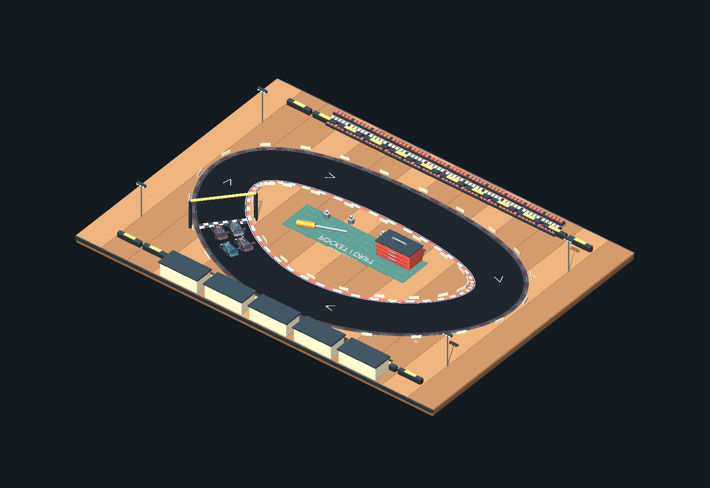
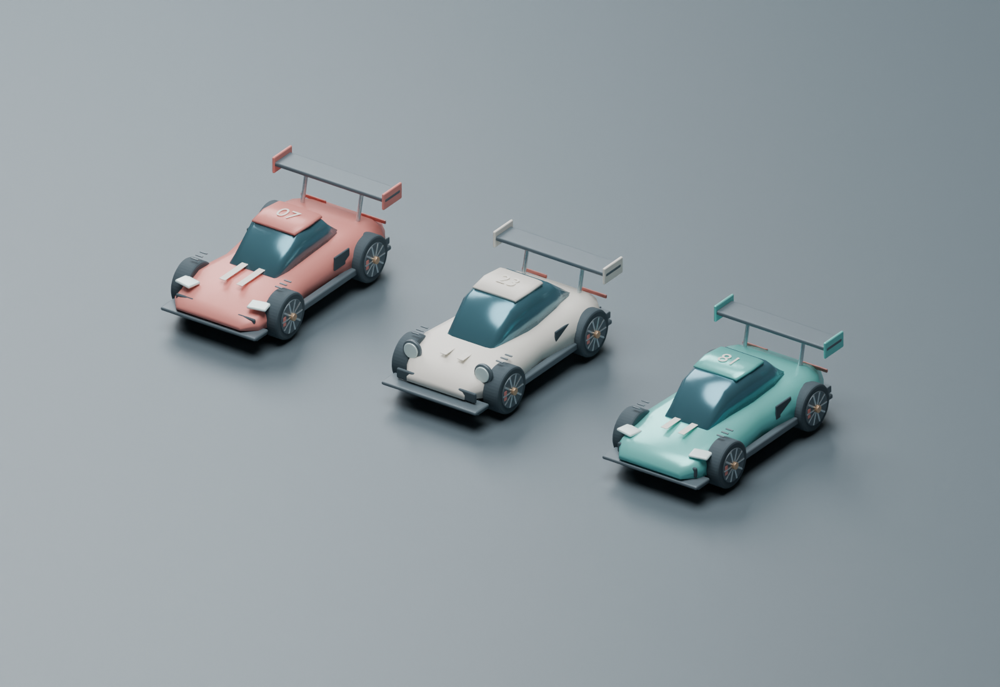

Scrapper
Red bodywork. Mid-engine GT silhouette. A bold starting point for the grid.
MINIATURE MOTORSPORT / v3.1 BETA / NOVEMBER 2026
A workshop bench. A grid of miniature racers. A very big idea.
Pocket Drift: Overdrive is an arcade racing project built around toy-scale spectacle, drifting, and a combat-racing ambition. Follow the build from the garage floor up.
Get the playtest details See what's taking shape ↓
01 / THE GARAGE
Three visual identities. One miniature racing world.
Vehicle balance is still in development.

Red bodywork. Mid-engine GT silhouette. A bold starting point for the grid.
Ivory paint and a fastback profile. A different kind of presence on the bench.
Teal paint. Long hood. A coupe silhouette with its own unmistakable character.
02 / FROM THE WORKBENCH
DEVELOPMENT SNAPSHOT
05 NOV 2026
The Workshop Circuit art rebuild introduces sweeping corners, painted curbs, pit garages, grandstands, floodlights, and oversized workshop props. Three original stylized car bodies bring color to the starting grid.
The documented Unity check covers scene assembly and rendering. The next milestone is hands-on driving validation: steering, laps, collisions, recovery, and performance.
Scene & art milestone03 / BEHIND THE BUILD
Public contact: 404kidzworld
I'm Casper of Branded Creations, 2026, the creator of Pocket Drift: Overdrive. I'm building a small racing world that feels larger than life.
This page is the project's home for development progress, car and track previews, and future testing information. As the game grows, I'll share what changes, what needs work, and what players help improve.
04 / NEXT ON THE GRID
v3.1 Beta - Public release November 7, 2026
Current test build from Casper / Branded Creations. Public contact: 404kidzworld. A public download or signup link has not been added yet.
When a public test link is ready, this section will list supported platforms, controls, known issues, and how to send feedback. PC is the first target; other platforms are not confirmed.
Steering and drift feel, completing a race, collision and recovery behavior, readability, and performance. Future testing instructions will identify which features are ready in each build.
The v3.1 Beta public release is scheduled for November 7, 2026. A final game release date has not been announced. Development updates will appear here as milestones are verified.